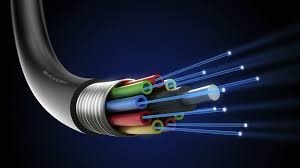
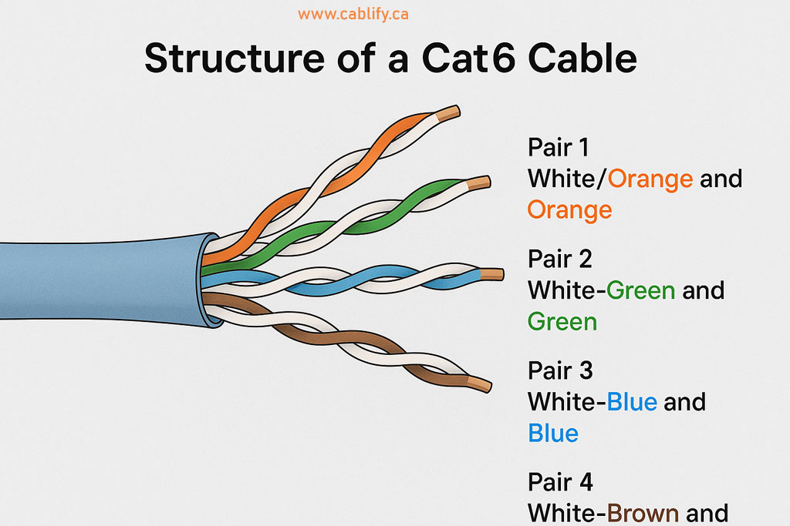
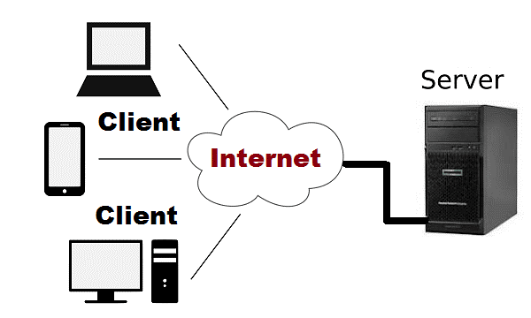
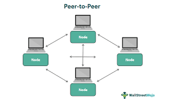
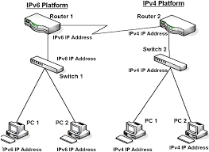

Computer Network
A computer network is a collection of interconnected devices that share resources and information. Networks enable seamless communication between users, allowing people to exchange data, send messages, and access shared resources such as printers, storage devices, and internet connections. These networks make it possible for individuals and organizations to work efficiently by sharing information quickly and securely. Computer networks also provide global connectivity that spans across cities, countries, and continents, making it possible to communicate instantly from anywhere in the world. From simple home setups to highly complex enterprise infrastructures, computer networks form the backbone of modern digital communication systems and support services such as email, video conferencing, online learning, cloud computing, and e-commerce platforms.
Telecommunication
Telecommunication is communication over distance using electronic means. It has evolved dramatically throughout history, improving the speed, reliability, and efficiency of communication systems. Early forms of telecommunication were limited, but modern systems allow real-time global interaction.
- Telegraph – The first long-distance electronic communication system that used electrical signals to send coded messages over wires, marking the beginning of modern communication technology.
- Telephone – Introduced voice transmission, allowing people to speak with each other instantly across long distances, which revolutionized personal and business communication.
- Radio – Enabled wireless communication by transmitting audio signals through the air, making it possible to broadcast information to a large audience.
- Digital Communication – Modern communication systems that use computers and the internet to transmit data, including text, audio, and video, at very high speeds.
Today, telecommunication connects people and systems globally using electronic signals, enabling fast, efficient, and reliable communication across the world.
Examples of Telecommunication
- Telephones (landline and mobile) – Used for voice calls, messaging, and internet access, forming an essential part of daily communication.
- Radio communication – Used for broadcasting music, news, and emergency information to a wide audience.
- Television broadcasting – Transmits audio and video content for entertainment and information.
- Internet communication – Includes websites, emails, social media, and online services.
- Video conferencing – Allows face-to-face communication over long distances using internet technology.
- Email and instant messaging – Provide quick and efficient text-based communication.
- Satellite communication – Enables communication over long distances, including remote and rural areas.
- Fax machines – Used to send printed documents electronically through telephone lines.
Broadband and Its Types
DSL (Digital Subscriber Line)
DSL uses existing telephone lines to provide high-speed internet access. It is widely available and cost-effective, making it a common choice for households. However, its speed decreases as the distance between the user and the service provider increases.
Cable
Cable internet uses coaxial cables originally designed for television services. It provides faster speeds than DSL and can support multiple services simultaneously, such as television and internet access. However, performance may be affected by network congestion during peak usage times.
Fiber Optic
Fiber optic communication uses light signals transmitted through thin strands of glass or plastic fibers. It is the fastest and most reliable type of internet connection, offering extremely high speeds and minimal signal loss even over long distances.
Advantages of Broadband
- Provides high-speed internet access, allowing users to download large files quickly, stream high-quality videos without interruption, and enjoy smooth online gaming experiences.
- Always-on connectivity ensures that users remain connected to the internet at all times without the need to dial up a connection.
- Supports multiple users and devices simultaneously, making it ideal for homes, schools, and businesses.
- Suitable for advanced applications such as video conferencing, cloud computing, and large data transfers that require stable and reliable connections.
Disadvantages of Broadband
- Can be expensive compared to traditional dial-up connections, especially for high-speed plans with advanced features.
- Not available in all areas, particularly in rural and remote regions where infrastructure is limited.
- Internet speed may vary depending on factors such as location, network congestion, and distance from the service provider.
- Some broadband services have data usage limits, which may result in additional charges or reduced speeds after exceeding the limit.
Bandwidth
Bandwidth is the maximum data transfer rate of a network connection and is measured in bits per second (bps), Megabits per second (Mbps), or Gigabits per second (Gbps). It determines how much data can be transmitted at one time. A higher bandwidth allows more data to flow simultaneously, resulting in faster downloads, smoother streaming, and better performance for applications that require large amounts of data.
Throughput vs Bandwidth
- Bandwidth: Refers to the theoretical maximum data transfer capacity of a network, representing how much data could be transmitted under ideal conditions.
- Throughput: Refers to the actual amount of data successfully transmitted in real-world conditions, which is usually lower due to factors such as network congestion, latency, and data loss.
Mobile Networks: 3G, 4G, 5G
- 3G – Offers speeds up to 2 Mbps, enabling basic internet browsing, email communication, and video calling.
- 4G – Provides speeds up to 100 Mbps, supporting high-definition video streaming, online gaming, and advanced mobile applications.
- 5G – Delivers speeds up to 10 Gbps with ultra-low latency, supporting modern technologies such as IoT devices, smart cities, and autonomous vehicles.
Advantages of 5G
- Extremely high speed allows faster downloads, high-quality streaming, and improved user experience.
- Ultra-low latency enables real-time communication, which is important for applications like remote surgery and autonomous driving.
- Supports a large number of connected devices simultaneously, making it ideal for smart environments and IoT systems.
- Improves network efficiency and reliability, especially in crowded urban areas.
Disadvantages of 5G
- Requires expensive infrastructure development, including installation of many small towers and advanced equipment.
- Limited coverage, especially in rural and remote areas where deployment is slow.
- Requires compatible devices, meaning users may need to upgrade their smartphones or equipment.
- High-frequency signals have shorter range and can be blocked by buildings, trees, and other obstacles.
Data Packets
Data packets are small units into which large amounts of data are divided before being transmitted over a network. Each packet contains part of the original message along with information such as source address, destination address, and sequence number. These packets travel independently across the network and are reassembled at the destination to recreate the original data accurately.
Frequency in Communication
Frequency refers to the number of times a signal repeats in one second and is measured in Hertz (Hz). It plays an important role in communication systems, as higher frequencies allow faster data transmission but have shorter range, while lower frequencies can travel longer distances but carry less data.
Communication Modes
- Simplex – Communication takes place in only one direction, such as television broadcasting where signals are sent but not received back.
- Half Duplex – Communication occurs in both directions but not at the same time, such as in walkie-talkies.
- Full Duplex – Communication occurs in both directions simultaneously, such as in telephone conversations.
Communication Components
- Sender – The source that sends the message.
- Receiver – The destination that receives the message.
- Message – The information being transmitted.
- Medium – The channel through which the message travels.
- Protocol – The set of rules that govern communication.
Optical Fibre

Optical fibre technology uses light signals to transmit data through thin strands of glass or plastic. It provides very high-speed communication and is widely used in modern telecommunication networks.
Advantages
- Provides extremely high speed and bandwidth, making it suitable for modern high-demand applications.
- Capable of transmitting data over long distances with minimal signal loss.
- Immune to electromagnetic interference, ensuring reliable communication.
Disadvantages
- Expensive to install and maintain compared to traditional cables.
- Fragile and requires careful handling during installation.
Twisted Pair Cable
Twisted pair cable consists of twisted wires used in networks and telephone lines. It is cheap and easy to use, but has lower speed and is affected by interference.
Advantages
- Low cost and widely available, making it suitable for basic networking needs.
- Easy to install and maintain.
Disadvantages
- Limited bandwidth and slower data transmission speed.
- Susceptible to electromagnetic interference.
Cat6 Cable
Cat6 cable is a high-speed network cable used in wired connections. It provides fast and reliable data transfer, but it is more expensive and has limited distance.

Advantages
- Supports high-speed data transmission suitable for modern networks.
- More reliable and has better performance compared to older cables.
Disadvantages
- More expensive than older cable types.
- Limited transmission distance compared to fiber optics.
WiFi
WiFi is a wireless technology that provides internet access without cables. It offers high speed and supports multiple devices, but signals can be affected by obstacles and may have security risks.
Advantages
- Provides wireless connectivity, allowing users to connect without physical cables.
- Convenient and easy to set up in homes, schools, and offices.
Disadvantages
- Security risks if the network is not properly protected.
- Signal strength may weaken due to interference and obstacles.
Bluetooth
Bluetooth is a short-range wireless technology used to connect devices like phones, headphones, and speakers. It is easy to use and consumes low power, but it has limited range and slower speed compared to WiFi.
Advantages
- Consumes low power, making it suitable for small devices.
- Easy to connect and widely used for short-range communication.
Disadvantages
- Limited range of communication.
- Slower data transfer compared to WiFi.
RFID Technology
RFID (Radio Frequency Identification) technology uses radio waves to identify and track objects automatically without requiring direct contact.
Advantages
- Enables fast and efficient tracking of goods and assets.
- Does not require physical contact or line of sight.
Disadvantages
- High implementation cost.
- Potential privacy and security concerns.
Satellite Communication
Satellite communication uses satellites to transmit signals over long distances. It is useful in remote areas, but it is expensive and may have signal delays.
Advantages
- Provides communication over large geographical areas, including remote and inaccessible regions.
- Supports global broadcasting, navigation, and weather monitoring systems.
Disadvantages
- High cost of installation and maintenance.
- Signal delay due to long distance between satellite and Earth.


Architecture And IP Addressing
Network Architecture and IP Addressing
1. Network Architecture
Network architecture refers to the design and structure of a computer network. It explains how computers and devices are connected and how they communicate with each other.
Types of Network Architecture
Client-Server Architecture
In this model, one main computer called the server provides services, and other computers called clients request services from it.

Advantages
Disadvantages
Peer-to-Peer Architecture
In this model, all computers are equal and can share data directly without a central server.

Advantages
Disadvantages
2. Network Protocols
Network protocols are rules that help devices communicate over a network.
3. Concept of IP Addressing
IP (Internet Protocol) Addressing is a system used to uniquely identify each device on a network. It works like a digital home address for computers and devices.
Every device must have an IP address to communicate. It ensures that data sent over a network reaches the correct destination.
IP addressing operates at the Network Layer (Layer 3) of the OSI model.
Functions of IP Addressing
IPv4
IPv4 uses 32-bit addressing and is written in decimal form like 192.168.1.1. It has about 4.3 billion addresses.
IPv6
IPv6 uses 128-bit addressing and is written in hexadecimal form like 2001:0db8:85a3:0000:0000:8a2e:0370:7334.

4. Network Commands
Command Summary Table
. 5. Summary
Network architecture defines how devices connect. IP addressing identifies devices. Network protocols help communication. Commands are used for troubleshooting networks.